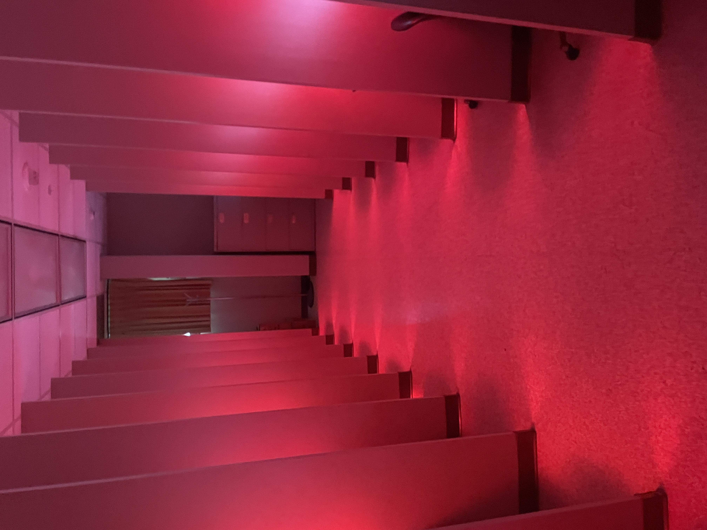

Purpose-built resources for sensory evaluation, food preparation, instrumental analysis, and psychophysical research, all on-site and available for use by academic and industry partners.

The facility includes 30 individual, isolated sensory booths equipped with standardized lighting, including white, red, and dim settings, to support controlled testing conditions.
Isolated booth design minimizes cross-contamination between participants and ensures that evaluations are conducted under consistent, reproducible conditions.
A fully approved and compliant sensory kitchen with a professional cooking range is available for controlled food preparation, cooking, heating, and sample holding. The kitchen is equipped with consumer and foodservice appliances, a commercial hood with fire suppression and negative airflow, and temperature monitoring equipment. Environmental Health has provided oversight for safe use of all equipment. A separate prep space supports sample staging, portioning, and handling prior to testing.
The prep space is supported by a dedicated walk-in cold room and walk-in freezer for storage of raw materials, prepared samples, perishable products, and study-related materials.
A dedicated laboratory is available for instrumental food quality and texture analysis, including mechanical measures of tenderness and texture differences across food products.
Adjacent to the lab is a suite of advanced testing booths for specialized sensory, behavioral, psychophysical, and human-subject assessment procedures.
Consumer sensory evaluation is conducted within the facility. We maintain a large consumer database with diverse demographic representation, with participants randomly recruited from the College Station–Bryan area.
External consumer sensory evaluation can also be conducted in key cities across the United States, as needed for project objectives.
We welcome site visits from prospective clients and partners. Reach out to schedule a tour and consultation.
Contact Us View Services